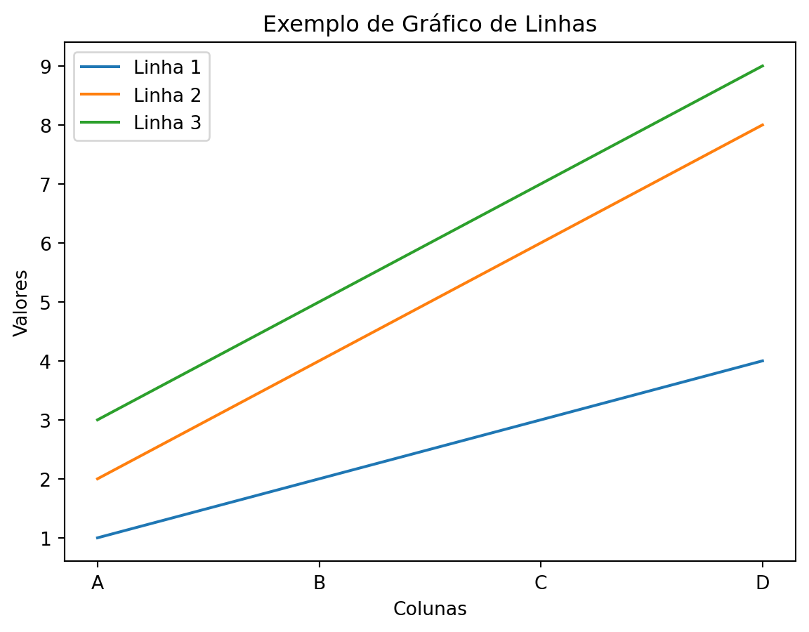
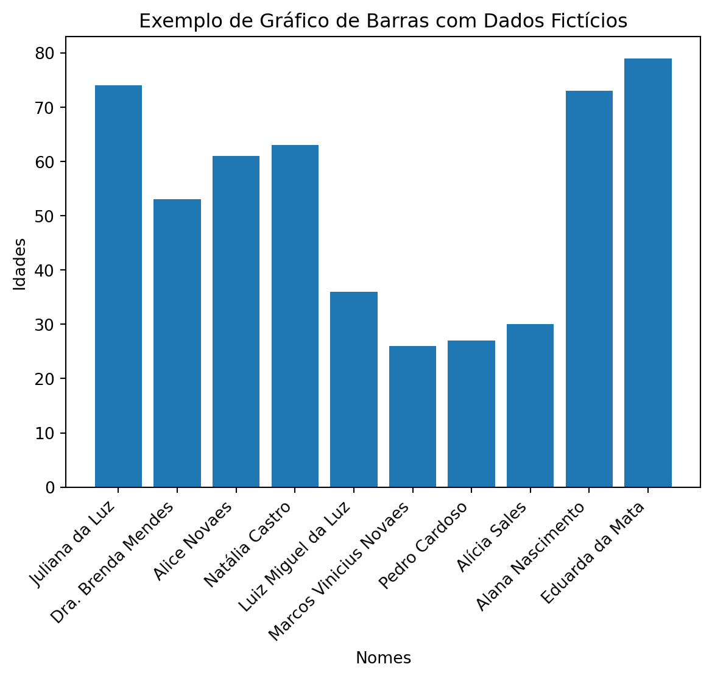

1 + 1
import pandas as pd
import numpy as np
lista = [[1,2,3,4],[2,4,6,8],[3,5,7,9]]
colunas = ['A','B','C','D']
df = pd.DataFrame(lista, columns=colunas)
df| A | B | C | D | |
|---|---|---|---|---|
| 0 | 1 | 2 | 3 | 4 |
| 1 | 2 | 4 | 6 | 8 |
| 2 | 3 | 5 | 7 | 9 |
Harlow Malloc
15 mar, 2024
1 + 1
import pandas as pd
import numpy as np
lista = [[1,2,3,4],[2,4,6,8],[3,5,7,9]]
colunas = ['A','B','C','D']
df = pd.DataFrame(lista, columns=colunas)
df| A | B | C | D | |
|---|---|---|---|---|
| 0 | 1 | 2 | 3 | 4 |
| 1 | 2 | 4 | 6 | 8 |
| 2 | 3 | 5 | 7 | 9 |
import plotly.graph_objects as go
# Criando as linhas do gráfico
traces = []
for i, row in df.iterrows():
trace = go.Scatter(x=df.columns, y=row.values, mode='lines', name=f'Linha {i+1}')
traces.append(trace)
# Criando o layout
layout = go.Layout(title='Exemplo de Gráfico de Linhas', xaxis=dict(title='Colunas'), yaxis=dict(title='Valores'))
# Criando a figura
fig = go.Figure(data=traces, layout=layout)
# Exibindo o gráfico
fig.show()import matplotlib.pyplot as plt
# Plotando o gráfico
plt.plot(df.columns, df.iloc[0], label='Linha 1')
plt.plot(df.columns, df.iloc[1], label='Linha 2')
plt.plot(df.columns, df.iloc[2], label='Linha 3')
# Adicionando legendas e título
plt.legend()
plt.title('Exemplo de Gráfico de Linhas')
plt.xlabel('Colunas')
plt.ylabel('Valores')
# Exibindo o gráfico
plt.show()
from faker import Faker
fake = Faker('pt_BR')
# Gerando dados fictícios
num_points = 10
nomes = [fake.name() for _ in range(num_points)]
idades = [fake.random_int(18, 80) for _ in range(num_points)]
# Plotando o gráfico
plt.bar(nomes, idades)
plt.xlabel('Nomes')
plt.ylabel('Idades')
plt.title('Exemplo de Gráfico de Barras com Dados Fictícios')
plt.xticks(rotation=45, ha='right')
plt.show()
from faker import Faker
fake = Faker('pt_BR')
# Gerando dados fictícios
num_points = 10
nomes = [fake.name() for _ in range(num_points)]
idades = [fake.random_int(18, 80) for _ in range(num_points)]
# Criando o gráfico
fig = go.Figure(data=[go.Bar(x=nomes, y=idades)])
fig.update_layout(title='Exemplo de Gráfico de Barras com Dados Fictícios',
xaxis_title='Nomes',
yaxis_title='Idades')
fig.show()import plotly.express as px
# Carregar o conjunto de dados
url = "https://archive.ics.uci.edu/ml/machine-learning-databases/iris/iris.data"
column_names = ['sepal_length', 'sepal_width', 'petal_length', 'petal_width', 'class']
df = pd.read_csv(url, names=column_names)
# Visualizar os primeiros registros do DataFrame
print(df.head())
# Plotar os dados usando Plotly
fig = px.scatter(df, x='sepal_length', y='sepal_width', color='class', title='Gráfico de Dispersão Iris')
fig.show() sepal_length sepal_width petal_length petal_width class
0 5.1 3.5 1.4 0.2 Iris-setosa
1 4.9 3.0 1.4 0.2 Iris-setosa
2 4.7 3.2 1.3 0.2 Iris-setosa
3 4.6 3.1 1.5 0.2 Iris-setosa
4 5.0 3.6 1.4 0.2 Iris-setosaimport pandas as pd
import plotly.graph_objects as go
# Carregar o conjunto de dados
url = "https://archive.ics.uci.edu/ml/machine-learning-databases/iris/iris.data"
column_names = ['sepal_length', 'sepal_width', 'petal_length', 'petal_width', 'class']
df = pd.read_csv(url, names=column_names)
# Definir as cores e marcadores para cada classe
colors = {'Iris-setosa': 'rgb(255, 127, 14)', 'Iris-versicolor': 'rgb(31, 119, 180)', 'Iris-virginica': 'rgb(44, 160, 44)'}
markers = {'Iris-setosa': 'circle', 'Iris-versicolor': 'square', 'Iris-virginica': 'diamond'}
# Criar o gráfico de dispersão tridimensional
fig = go.Figure(data=[go.Scatter3d(
x=df['sepal_length'],
y=df['sepal_width'],
z=df['petal_length'],
mode='markers',
marker=dict(
color=[colors[class_] for class_ in df['class']],
size=8,
symbol=[markers[class_] for class_ in df['class']],
opacity=0.8
),
hovertext=[f"Classe: {class_}<br>Comprimento da Sépala: {sep_len}<br>Largura da Sépala: {sep_width}<br>Comprimento da Pétala: {pet_len}"
for class_, sep_len, sep_width, pet_len in zip(df['class'], df['sepal_length'], df['sepal_width'], df['petal_length'])],
hoverinfo='text'
)])
# Adicionar título e rótulos dos eixos
fig.update_layout(title='Relação entre as características das flores Iris',
scene=dict(xaxis_title='Comprimento da Sépala',
yaxis_title='Largura da Sépala',
zaxis_title='Comprimento da Pétala'))
# Exibir o gráfico
fig.show()import pandas as pd
import plotly.graph_objects as go
# Dados fictícios de receita e despesas trimestrais ao longo de alguns anos
anos = [2018, 2019, 2020, 2021]
receita = [100000, 120000, 150000, 180000]
despesas = [80000, 85000, 95000, 105000]
# Criar DataFrame
df = pd.DataFrame({'Ano': anos, 'Receita': receita, 'Despesas': despesas})
# Criar o gráfico de linha
fig = go.Figure()
# Adicionar linhas de receita e despesas
fig.add_trace(go.Scatter(x=df['Ano'], y=df['Receita'], mode='lines+markers', name='Receita', line=dict(color='rgb(31, 119, 180)')))
fig.add_trace(go.Scatter(x=df['Ano'], y=df['Despesas'], mode='lines+markers', name='Despesas', line=dict(color='rgb(255, 127, 14)')))
# Personalizar layout
fig.update_layout(title='Tendência de Receita e Despesas ao Longo do Tempo',
xaxis=dict(title='Ano', tickmode='linear', dtick=1),
yaxis=dict(title='Valor (R$)'),
legend=dict(x=0, y=1))
# Adicionar anotação
fig.add_annotation(x=2021, y=180000, text="Tendência de crescimento da receita", showarrow=True, arrowhead=1)
# Exibir o gráfico
fig.show()import folium
# Criar um mapa centrado em uma localização inicial
mapa = folium.Map(location=[-15.793889, -47.882778], zoom_start=4)
# Adicionar marcadores para algumas localizações fictícias
folium.Marker([-23.55052, -46.633308], popup='São Paulo').add_to(mapa)
folium.Marker([51.5074, -0.1278], popup='Londres').add_to(mapa)
folium.Marker([40.7128, -74.0060], popup='Nova York').add_to(mapa)
folium.Marker([48.8566, 2.3522], popup='Paris').add_to(mapa)
# Salvar o mapa como um arquivo HTML
mapa.save('mapa.html')
# Exibir o mapa
mapaA logística desempenha um papel fundamental no sucesso de qualquer operação comercial. Desde o transporte de mercadorias até o gerenciamento eficiente de estoques, cada aspecto da logística contribui para a eficiência e lucratividade de uma empresa. Neste artigo, exploraremos a importância da logística no comércio moderno, destacando seus principais componentes e estratégias para otimização.
A logística compreende todas as atividades relacionadas à gestão e movimentação de materiais, produtos e informações ao longo da cadeia de suprimentos. Isso inclui transporte, armazenagem, distribuição, embalagem e muito mais. Uma logística eficaz garante que os produtos certos estejam disponíveis no local certo e no momento certo, minimizando custos e maximizando a satisfação do cliente.
O transporte é um dos componentes mais visíveis da logística. Envolve o movimento físico de mercadorias de um ponto a outro, seja por estrada, ferrovia, água ou ar. A escolha do modo de transporte adequado depende de vários fatores, incluindo distância, tempo de entrega, custo e natureza da carga.
A armazenagem diz respeito à gestão de estoques em instalações adequadas, como armazéns e centros de distribuição. Isso inclui recebimento, estocagem, organização e despacho de produtos. Uma eficiente gestão de estoques garante que os produtos estejam disponíveis quando necessário, ao mesmo tempo em que minimiza os custos de armazenamento.
A gestão de estoque envolve o monitoramento e controle dos níveis de estoque para garantir um equilíbrio adequado entre oferta e demanda. Isso inclui previsão de demanda, reabastecimento oportuno, controle de inventário e minimização de estoque obsoleto ou excessivo.
A tecnologia da informação desempenha um papel crucial na logística moderna. Sistemas de gerenciamento de transporte, software de gestão de armazém e sistemas de rastreamento de inventário ajudam a automatizar processos, melhorar a precisão e a visibilidade da cadeia de suprimentos, e facilitar a comunicação entre os diferentes elos da cadeia.
Uma roteirização eficiente é essencial para minimizar os custos de transporte e reduzir o tempo de entrega. Isso envolve a otimização das rotas de entrega, considerando fatores como distância, tráfego e capacidade de carga.
Parcerias estratégicas com fornecedores, transportadoras e outros parceiros logísticos podem ajudar a reduzir custos, melhorar a eficiência e ampliar a capacidade de resposta da cadeia de suprimentos.
Tecnologias emergentes, como Internet das Coisas (IoT), inteligência artificial (IA) e blockchain, têm o potencial de transformar a logística. Essas tecnologias podem melhorar a visibilidade da cadeia de suprimentos, automatizar processos e facilitar a tomada de decisões mais informadas.
A logística desempenha um papel crucial no comércio moderno, garantindo que produtos sejam entregues de forma eficiente, oportuna e econômica. Com uma logística eficaz, as empresas podem reduzir custos, melhorar a satisfação do cliente e ganhar uma vantagem competitiva no mercado. Ao entender os componentes-chave da logística e implementar estratégias de otimização, as empresas podem maximizar sua eficiência operacional e alcançar o sucesso a longo prazo.